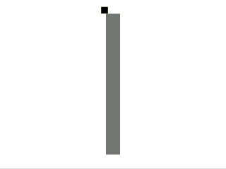
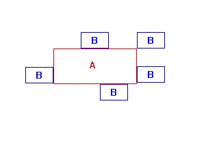
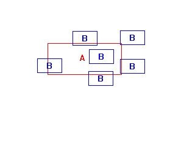

Collision Detection

Last Updated 3/30/14
Here's one of the most important concepts of gaming.We have a square and wall. We want to make sure that the square doesn't go through the wall. In order for that to happen we have to check if the square and wall have collided.
This tutorial covers a basic way to check collision between two objects.
A Collision Detection tutorial with SDL 2 is now available.
//The wall
SDL_Rect wall;
Here we have the wall that the square is going to interact with. Nothing much to explain here.
//The square
class Square
{
private:
//The collision box of the square
SDL_Rect box;
//The velocity of the square
int xVel, yVel;
public:
//Initializes the variables
Square();
//Takes key presses and adjusts the square's velocity
void handle_input();
//Moves the square
void move();
//Shows the square on the screen
void show();
};
Now here's the square class we're going to use.
As you'll probably notice it's almost identical to the Dot class from the motion tutorial.
The only real difference in the variables is the fact that the square's X and Y coordinates are held inside of a SDL_Rect which also happens to hold the dimensions of the square. Otherwise it's pretty much the same.
The only real difference in the variables is the fact that the square's X and Y coordinates are held inside of a SDL_Rect which also happens to hold the dimensions of the square. Otherwise it's pretty much the same.
bool check_collision( SDL_Rect A, SDL_Rect B )
{
//The sides of the rectangles
int leftA, leftB;
int rightA, rightB;
int topA, topB;
int bottomA, bottomB;
//Calculate the sides of rect A
leftA = A.x;
rightA = A.x + A.w;
topA = A.y;
bottomA = A.y + A.h;
//Calculate the sides of rect B
leftB = B.x;
rightB = B.x + B.w;
topB = B.y;
bottomB = B.y + B.h;
Here we have the actual function that checks for a collision.
First thing the function does is take in the SDL_Rects and calculate their sides.
First thing the function does is take in the SDL_Rects and calculate their sides.
//If any of the sides from A are outside of B
if( bottomA <= topB )
{
return false;
}
if( topA >= bottomB )
{
return false;
}
if( rightA <= leftB )
{
return false;
}
if( leftA >= rightB )
{
return false;
}
//If none of the sides from A are outside B
return true;
}
Now it's time for collision.
The basic principle of rectangular collision is that we check whether the sides from one rectangle are outside the sides of the other rectangle.
Think about it, it's impossible for two rectangles to collide if their sides have to be outside each other, just look:
Now notice when there is a collision:
So we go through and make sure none of the sides from B are inside A. If there's no collision we return false, if there is we return true.
Notice that I use greater than or equal to and less than or equal to. This means in order for a collision to happen the rectangles have to overlap. If you use greater than and less than, the rectangles in this picture:
would count as collisions because they're next to each other.
Use which ever method best suits your needs.
The basic principle of rectangular collision is that we check whether the sides from one rectangle are outside the sides of the other rectangle.
Think about it, it's impossible for two rectangles to collide if their sides have to be outside each other, just look:

Every single time all the sides from B are outside of A.Now notice when there is a collision:

At least one side from B is inside A.So we go through and make sure none of the sides from B are inside A. If there's no collision we return false, if there is we return true.
Notice that I use greater than or equal to and less than or equal to. This means in order for a collision to happen the rectangles have to overlap. If you use greater than and less than, the rectangles in this picture:
would count as collisions because they're next to each other.
Use which ever method best suits your needs.
Square::Square()
{
//Initialize the offsets
box.x = 0;
box.y = 0;
//Set the square's dimensions
box.w = SQUARE_WIDTH;
box.h = SQUARE_HEIGHT;
//Initialize the velocity
xVel = 0;
yVel = 0;
}
In the square's constructor we initialize the square's offsets, dimensions, and velocity like before.
void Square::move()
{
//Move the square left or right
box.x += xVel;
//If the square went too far to the left or right or has collided with the wall
if( ( box.x < 0 ) || ( box.x + SQUARE_WIDTH > SCREEN_WIDTH ) || ( check_collision( box, wall ) ) )
{
//Move back
box.x -= xVel;
}
//Move the square up or down
box.y += yVel;
//If the square went too far up or down or has collided with the wall
if( ( box.y < 0 ) || ( box.y + SQUARE_HEIGHT > SCREEN_HEIGHT ) || ( check_collision( box, wall ) ) )
{
//Move back
box.y -= yVel;
}
}
Now in the move() function we move the square, then check whether the square went outside the screen and whether
the square overlaps the wall.
If the square does go out of bounds we move it back.
//Set the wall
wall.x = 300;
wall.y = 40;
wall.w = 40;
wall.h = 400;
In our main function after we initialize and load everything, we set the attributes of the wall.
//While the user hasn't quit
while( quit == false )
{
//Start the frame timer
fps.start();
//While there's events to handle
while( SDL_PollEvent( &event ) )
{
//Handle events for the square
mySquare.handle_input();
//If the user has Xed out the window
if( event.type == SDL_QUIT )
{
//Quit the program
quit = true;
}
}
//Move the square
mySquare.move();
//Fill the screen white
SDL_FillRect( screen, &screen->clip_rect, SDL_MapRGB( screen->format, 0xFF, 0xFF, 0xFF ) );
//Show the wall
SDL_FillRect( screen, &wall, SDL_MapRGB( screen->format, 0x77, 0x77, 0x77 ) );
//Show the square on the screen
mySquare.show();
//Update the screen
if( SDL_Flip( screen ) == -1 )
{
return 1;
}
//Cap the frame rate
if( fps.get_ticks() < 1000 / FRAMES_PER_SECOND )
{
SDL_Delay( ( 1000 / FRAMES_PER_SECOND ) - fps.get_ticks() );
}
}
Then we have our main loop. We simply handle events, move the square, fill the background,
fill the region of the wall, and show the square, then update the screen and cap the frame rate.